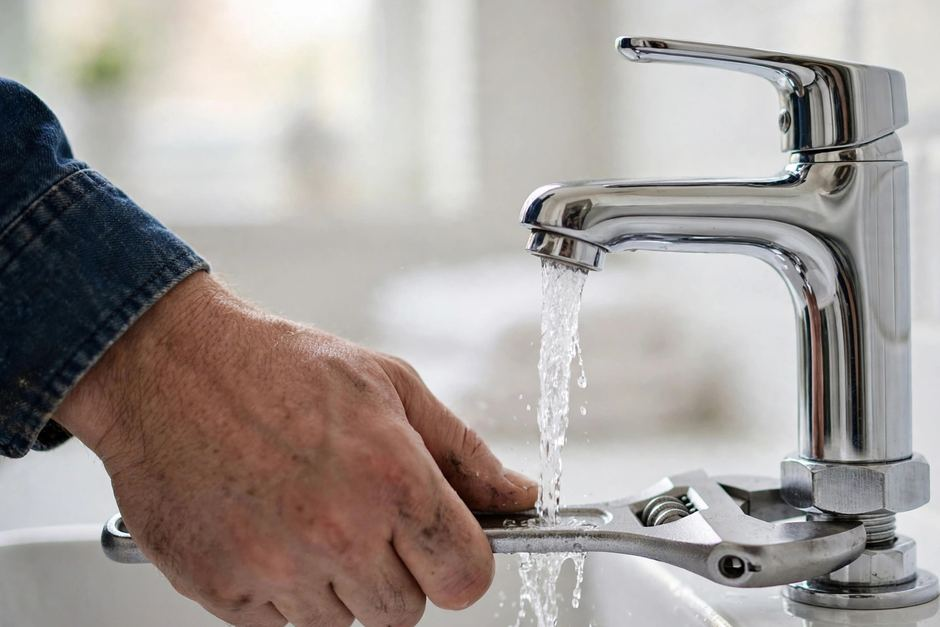
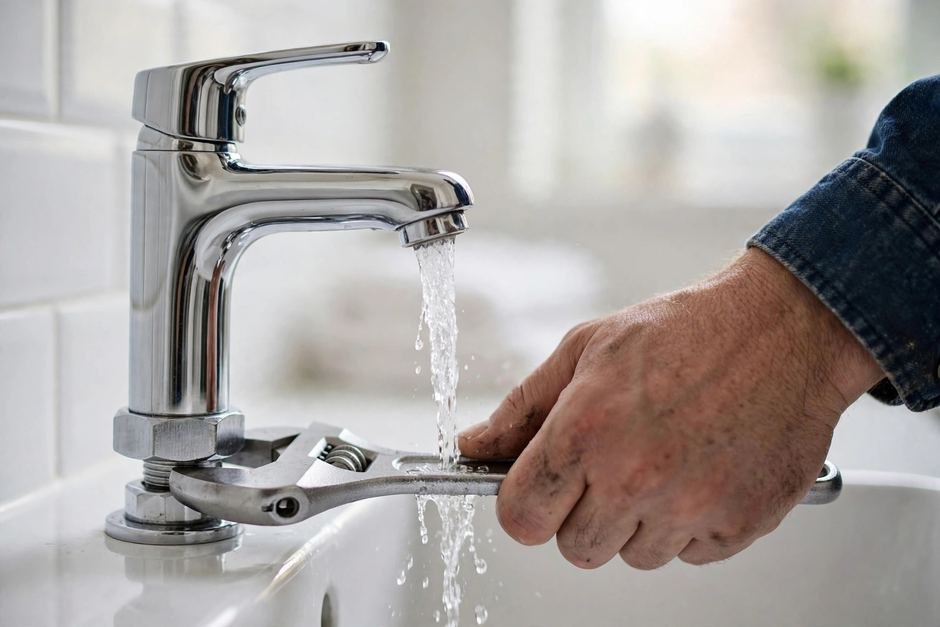
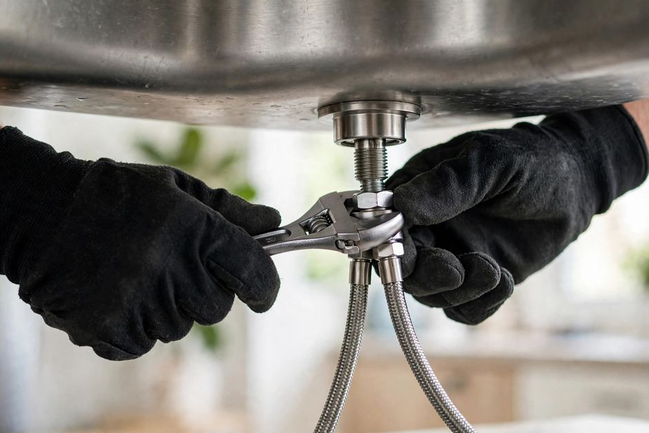
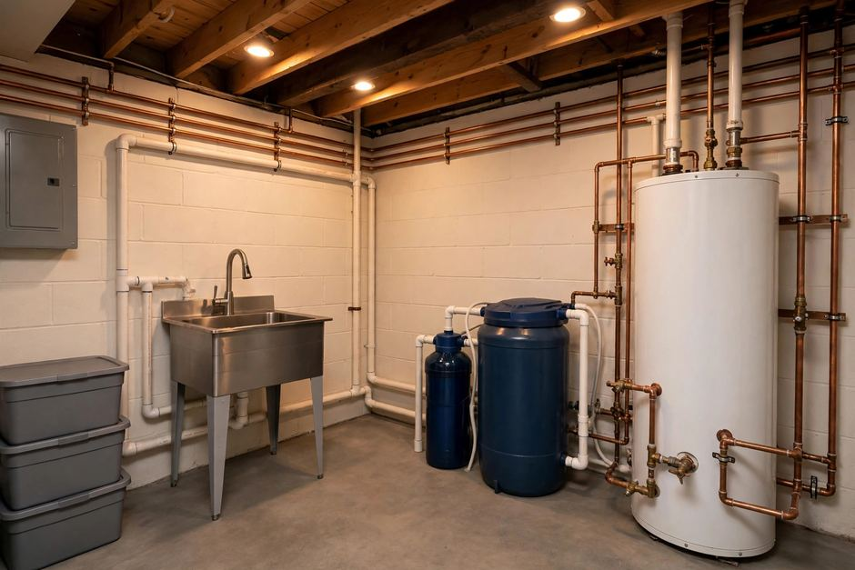

Faucet Services
Faucet Repair in Belleville, IL
Faucet problems range from drips and stiff handles to low flow and leaks at the base. This page covers repair, replacement, and installation in one place for kitchen, bathroom, and utility faucets. Hinkle Plumbing Company assesses faucets in Belleville, IL, with sink repair context for drains and traps below.
1610 W Main St, Belleville, IL 62220Monday through Friday, 8:00 AM to 4:30 PM(618) 677-6556
What This Service Covers
Faucet Repair Scope in Belleville
Faucet scope covers kitchen, bathroom, and utility faucets, including handles, cartridges, seals, aerators, and connections for homes in Belleville, IL. Each faucet type is assessed on its own findings, and replacement is discussed where repair no longer serves the fixture.
Kitchen Faucet Repair
Kitchen faucet repair covers drips, handle stiffness, sprayer faults, and base leaks at the sink. Cartridge and seal findings shape repair scope, and sprayer hose condition is reviewed where a sprayer is present.
Bathroom Faucet Repair
Bathroom faucet repair covers drips, handle faults, and low flow at lavatory faucets. Cartridge findings and aerator condition are reviewed, and drain and trap context is considered alongside faucet findings.
Utility Faucet Repair
Utility faucet repair covers laundry and utility sinks where heavy use and mineral deposits affect operation. Handle, cartridge, and connection findings shape repair scope, and shutoff condition is checked during work.
Cartridge and Seal Work
Cartridge and seal work addresses the internal parts that control flow and shutoff inside the faucet. Wear, mineral deposits, and seal condition are reviewed, and parts are matched to the faucet type.
Faucet Replacement
Replacement covers removal of the existing faucet and installation of a replacement unit with new connections and sealing. Hole configuration, supply connections, and shutoff operation are reviewed during planning.
About Hinkle Plumbing Company
Faucet Work From a Belleville Base
Belleville-based Hinkle Plumbing Company covers faucet repair, replacement, and installation for homes across the city. Cartridge, seal, aerator, and connection findings are reviewed together, and scope is discussed before work begins.
Faucets see daily use, and cartridges, seals, and aerators wear with that use while mineral deposits collect on seats and screens. Drips waste water, stiff handles signal internal wear, and base leaks can damage counters and cabinets. Hinkle Plumbing Company reviews each faucet on its findings, and plumbing repairs context helps where supply or drain concerns extend beyond the faucet.

How we workImage showing faucet cartridge work at a kitchen sink in a Belleville home.
How Assessment Works
Faucet Assessment Steps
The steps flex with the condition of the job, but the sequence stays the same.
Discuss Symptoms
Drips, stiffness, low flow, sprayer faults, and base moisture are discussed to narrow the fault. Symptom details help separate cartridge faults from aerator, supply, or sealing concerns.
Inspect Handles and Flow
Handle movement, flow patterns, and temperature control behavior are inspected. Findings shape whether cartridge, seal, or aerator work is discussed for the faucet. Findings shape the work plan.
Check Base and Connections
Base sealing, supply connections, and cabinet moisture patterns are checked. Connection findings shape repair scope, and cabinet damage observations are shared where relevant. Assessment findings shape the plan.
Check Shutoffs
Shutoff operation under the sink is checked before repair or replacement proceeds. Shutoff findings shape sequencing, because seized shutoffs change how water control is handled during work.
Repair or Replace
Repair or replacement proceeds on the findings, with flow, shutoff, and sealing checked after work. Findings are discussed, and operation observations are shared so the faucet is understood after completion.
Repair Approaches
Faucet Repair Methods
Faucet methods reflect the fault found, the faucet type, and the condition of connected supply lines. Options below are discussed during assessment, and suitability is confirmed for the specific faucet rather than assumed.
Cartridge Replacement
Cartridge replacement addresses drips, stiffness, and temperature control faults inside single-handle faucets. Cartridge type is matched to the faucet, and mineral deposits on seats are reviewed during the work.
Seal and O-Ring Work
Seal and O-ring work addresses leaks at handles, spouts, and bases where seals have worn. Seal condition is reviewed, and replacement seals are matched to the faucet type and handle configuration.
Aerator Cleaning and Replacement
Aerator work addresses low flow and uneven spray patterns caused by sediment or mineral deposits. Aerator condition is reviewed, and cleaning or replacement reflects the deposits found.
Sprayer Hose Review
Sprayer hose condition is reviewed where kitchen faucets include a pull-down or side sprayer. Hose wear, connection leaks, and retraction context shape repair or replacement discussion for the sprayer.
Full Faucet Replacement
Full replacement suits faucets with worn bodies, persistent faults, or parts that no longer serve the fixture. Hole configuration and supply findings shape installation planning for the replacement unit.
Supply Line Review
Supply line condition and connection integrity are reviewed during faucet work. Line findings shape sequencing, and shutoff operation is checked before lines are disturbed. Findings guide the work sequence.
Common Patterns
When Faucet Repair Is Discussed
Faucet concerns often appear as drips, stiffness, or reduced flow at a single tap. The patterns below describe common reasons for assessment, without describing a specific property or job.

Kitchen Faucet Dripping After Shutoff
A common call describes a kitchen faucet that drips after the handle is closed, with dripping that persists apart from use patterns. Assessment reviews cartridge seating, seal condition, and handle movement to identify the driving part. Repair scope reflects the internal findings, and supply connections and shutoff operation are checked before internal work proceeds. The pattern is reviewed with related systems, and findings are discussed before work begins.
Bathroom Faucet With Low Flow
A common call describes a bathroom faucet with low flow or uneven spray, while other fixtures in the home flow as expected. Assessment checks aerator condition, cartridge findings, and supply patterns to narrow the cause. Aerator cleaning or replacement is discussed where deposits are found, and cartridge work is discussed where internal findings drive the pattern. Observations from assessment are shared, and scope reflects the combined findings for the space.
Signs to Note
Faucet Signs That Call for Assessment
Most calls fall into a few patterns. Knowing which pattern applies decides what the visit involves.
Dripping After Shutoff
Dripping after shutoff can signal cartridge or seal wear inside the faucet. Drip patterns and handle behavior are reviewed, and internal findings shape repair scope for the fixture. Findings guide the next steps.
Stiff or Loose Handles
Stiff or loose handles can reflect cartridge wear, seal condition, or handle mounting concerns. Handle movement is reviewed with flow findings, because handle faults often accompany internal wear. Assessment findings guide the response.
Low or Uneven Flow
Low or uneven flow can reflect aerator deposits, cartridge restriction, or supply findings. Flow patterns across fixtures help narrow the cause, and aerator condition is checked during assessment. Findings shape the assessment response.
Moisture at the Faucet Base
Moisture at the base or inside the cabinet can signal sealing or connection leaks. Base and cabinet findings are reviewed, because base leaks can damage counters and cabinets when left unaddressed.
Scope Factors
What Shapes Faucet Work Scope
Faucet type, internal findings, and shutoff context shape faucet scope.
Repair Versus Replacement
Part-level repair and full faucet replacement carry different scope, and faucet condition findings shape the choice. Findings are discussed by phone, and replacement planning includes hole configuration and connection context.
Faucet Type and Parts
Kitchen, bathroom, and utility faucets differ in cartridges, sprayers, and connection layouts. Faucet type findings shape parts and labor scope, and parts matching is discussed during planning. Scope is discussed before scheduling.
Shutoff and Supply Work
Shutoff replacement and supply line work add scope where seized or worn parts are found. Shutoff findings are included in the discussion, and readers are invited to call to discuss scope for a specific faucet.
Reviews from Google
What Customers Say on Google
★★★★★
“Very prompt and responsive, the worker was friendly and informative! Will use this company again!”
★★★★★
“Don did an outstanding job for me when I needed him and highly recommend his business”
★★★★★
“Rated 5.0 out of 5 across 3 Google reviews, all five stars.”

Is a permit needed for direct faucet replacement?
Scope shapes permit needs. The City of Belleville requires a permit before plumbing work begins (§152.05(A)); direct replacement of a toilet, sink, faucet, or other appliance is exempt, except hot water heaters require an electrical or gas permit (§152.05(B)(3)). Work beyond direct replacement is discussed during planning, and current City requirements are checked before scheduling.
Why does a faucet drip after the handle is closed?
Dripping often reflects cartridge seating or seal wear inside the faucet. Handle movement and drip patterns are reviewed, and internal findings shape whether cartridge, seal, or full replacement work is discussed for the fixture. Household observations are included in the discussion, and findings shape the response.
What causes low flow at one faucet?
Low flow at one faucet can reflect aerator deposits, cartridge restriction, or supply findings for that fixture. Aerator condition and flow patterns across fixtures are reviewed, and findings shape cleaning, cartridge, or supply discussion. Assessment findings are discussed plainly, and related observations are reviewed together.
What affects the scope of faucet repair or replacement?
Faucet type, cartridge and seal findings, aerator condition, shutoff operation, and supply line condition shape the scope. Each factor is reviewed during assessment, and readers are invited to call (618) 677-6556 to discuss scope for a specific faucet. Findings are discussed by phone before work is scheduled.
Related services
Other Plumbing Services We Handle

Sink Repair in Belleville, IL
Sink repair covers drains, traps, seals, and basin work below the faucet in kitchens and bathrooms.
Plumbing Repair in Belleville, IL
General plumbing repair covers leaks, drips, and supply concerns that can appear alongside faucet faults.
Leak Repair in Belleville, IL
Leak repair covers supply and drain leaks, including cabinet and base leaks found during faucet work.Mon–Fri 8:00 AM–4:30 PM
Discuss Faucet Repair in Belleville
Call (618) 677-6556 during Monday through Friday, 8:00 AM to 4:30 PM to discuss faucet repair in Belleville. Closed Saturday and Sunday. Cartridge, seal, and aerator findings are reviewed during assessment.

Talk with the local team
Request Faucet Repair & Installation
Call (618) 677-6556 during office hours, Monday through Friday, 8:00 AM to 4:30 PM. Tell us what is happening and we will talk through the next step.